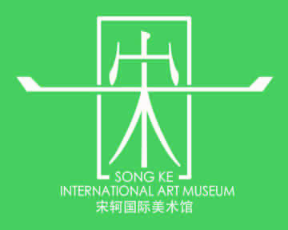

GLOBAL CHINESE ART FOUNDATION
OFFICIAL ARCHIVE
全球华人艺术基金会
收藏证书
CERTIFICATE OF ART COLLECTION
ARTIST
宋轲
旅美艺术家 · 1974 年生 · 山东莱阳人艺术家简介 ARTIST PROFILE
宋轲，旅美艺术家，1974 年生，山东莱阳人。连续两届蝉联胡润艺术榜，2026年胡润艺术榜第10。现为全球华人艺术基金会主席，美国中国美术馆馆长，中国致公党第十五届中央文化委员会委员，美国哥伦比亚大学客座教授，海南大学客座教授、硕士生导师，中国国家画院访问学者，《中华艺术》杂志总编，《青年文学家》杂志艺术总监，第十三届烟台市政协委员。2014 年在美国洛杉矶创办美国中国美术馆，创办《中华艺术》杂志，2014 年来先后创办洛杉矶宋轲美术馆、北京宋轲国际美术馆、北京宋轲国际艺术中心、莫斯科宋轲美术馆、景德镇宋轲国际陶瓷艺术馆、东京宋轲美术馆。
主编《中国书法家选集》《中国美术家选集》等美术类图书 10 余部 2000 多万字，出版《中国当代名家画集 —— 宋轲》、逸品典藏《中国当代学术性书画家 —— 宋轲》《工・无界》艺术新视觉 —— 中国当代艺术经典工笔系列宋轲、中国高等院校美术教学范本《宋轲花鸟画作品选》等作品集。1999 年应中共中央邀请参加中华人民共和国成立 50 周年阅兵观礼，2025 年荣登胡润中国艺术榜。艺术创作涵盖书法、绘画、诗歌、音乐和电影等领域，曾先后出访美国、英国、俄罗斯、日本、澳大利亚、新西兰、法国、德国、意大利、西班牙、葡萄牙、芬兰、荷兰、新加坡、印度尼西亚等 40 多个国家并举办展览。作品被多家学术机构、驻华使馆及多国元首收藏。
ART COLLECTION AUTHENTICATION · SONG KE